O LabControl controla o trabalho do laboratório do começo ao fim: a proposta enviada ao cliente, o pedido, o recebimento da amostra, as análises, o boletim com os resultados e o arquivo da contraprova. Ele substitui o sistema antigo e já traz todos os dados dele.
Cada usuário recebe um ou mais perfis de acesso (por exemplo: Recepção, Analista, Responsável Técnico, Comercial). O perfil define quais telas aparecem no menu e o que você pode fazer em cada uma: consultar, incluir, alterar, excluir ou imprimir. Se uma tela ou um botão deste manual não aparecer para você, é porque o seu perfil não dá esse acesso. Fale com o administrador do sistema.
O sistema pode atender mais de uma empresa (por exemplo, a matriz e uma filial). Os dados de cada empresa ficam separados: clientes, amostras, boletins e numeração. Você trabalha sempre em uma empresa por vez, mostrada no canto superior direito da tela.
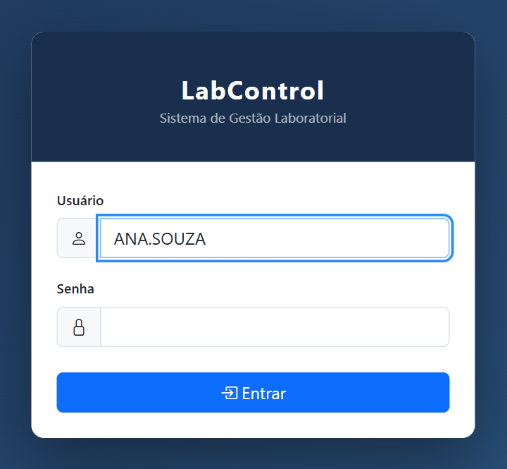
Depois de 5 tentativas erradas seguidas, o usuário fica bloqueado por 15 minutos. Espere esse tempo ou peça ao administrador para desbloquear.
Se você tem acesso a mais de uma empresa, o sistema pergunta em qual delas quer trabalhar. Marque a empresa e clique em Entrar. Quem tem acesso a uma empresa só entra direto.
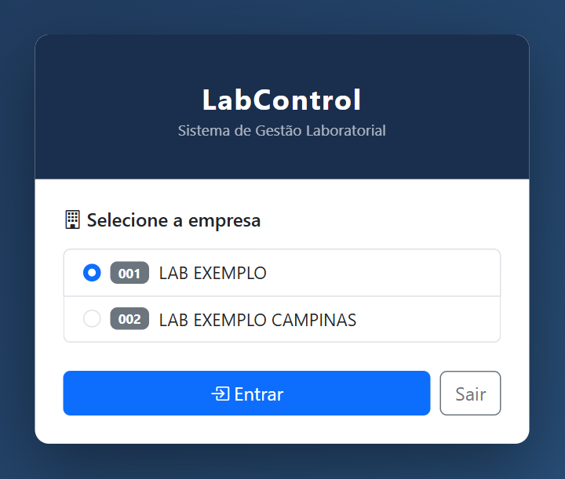
Para mudar de empresa depois de entrar, clique no seu nome no canto superior direito e escolha Trocar empresa (ou clique no nome da empresa, no alto).
Quando o administrador cria o seu usuário (ou redefine a sua senha), você recebe uma senha provisória. No primeiro acesso o sistema pede que você crie a sua própria senha:
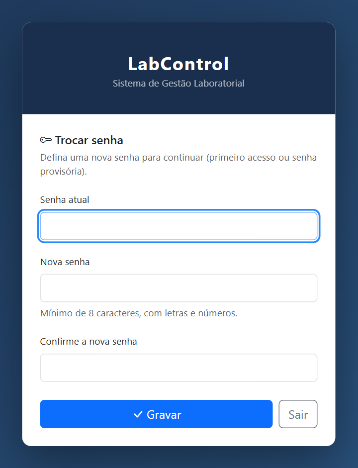
Clique no seu nome no canto superior direito e escolha Trocar senha.
Clique no seu nome no canto superior direito e escolha Sair. Faça isso sempre ao deixar o computador, principalmente se ele é usado por outras pessoas.
Se o servidor do sistema for reiniciado (por exemplo, numa atualização), todos precisam entrar de novo. Isso é normal: basta digitar usuário e senha outra vez.
Depois de entrar, aparece o Painel. À esquerda fica o menu, dividido em grupos; no alto, a empresa em que você está e o seu nome.
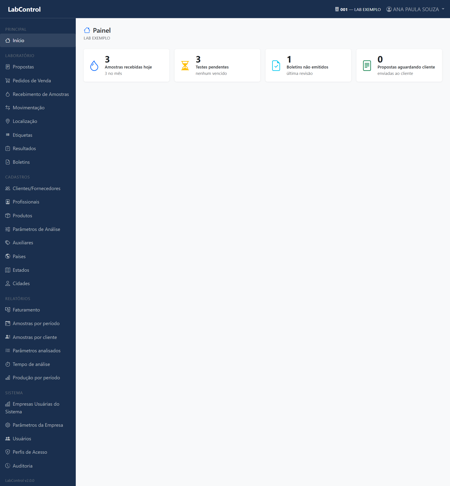
| Quadro | O que mostra |
|---|---|
| Amostras recebidas hoje | Quantas amostras entraram hoje e no mês. |
| Testes pendentes | Análises que ainda não têm resultado e quantas estão com o prazo vencido. |
| Boletins não emitidos | Boletins montados que ainda não foram emitidos. |
| Propostas aguardando cliente | Propostas enviadas ao cliente e ainda sem resposta. |
Clique em um quadro para abrir a tela correspondente.
| Grupo | Telas |
|---|---|
| Laboratório | Propostas, Pedidos de Venda, Recebimento de Amostras, Movimentação, Localização, Etiquetas, Resultados, Boletins |
| Cadastros | Clientes/Fornecedores, Profissionais, Produtos, Parâmetros de Análise, Auxiliares, Países, Estados, Cidades |
| Relatórios | Faturamento, Amostras por período, Amostras por cliente, Parâmetros analisados, Tempo de análise, Produção por período |
| Sistema | Empresas Usuárias do Sistema, Parâmetros da Empresa, Usuários, Perfis de Acesso, Auditoria e, só para o administrador geral, Migração de Dados |
Quase todas as telas seguem o mesmo jeito de trabalhar:
Mensagens em verde confirmam que deu certo. Mensagens em vermelho explicam por que algo não pode ser feito (por exemplo: "Este boletim foi emitido. Não é permitido alterar ou excluir."). Leia a mensagem: ela diz o que fazer.
Os números de proposta, pedido e amostra são dados pelo sistema na hora de gravar, sempre com o ano do servidor. Você não precisa (e não consegue) digitá-los. Enquanto o registro não é gravado, o número aparece como "INCLUSÃO".
| Documento | Formato | Exemplo |
|---|---|---|
| Proposta | número / ano − revisão | 000123/26-R0 (R1, R2… nas revisões) |
| Pedido de venda | número sequencial | 000000045 |
| Amostra | TT-CCCCC-AA/YY | 04-00123-01/26: tipo da amostra 04, número 00123, tipo de análise 01, ano 26 |
| Boletim | o mesmo número da amostra | 04-00123-01/26 (revisões: R01, R02…) |
Este é o fluxo normal do laboratório. Cada etapa tem um capítulo próprio neste manual.
— A proposta comercial enviada ao cliente: quais produtos serão analisados, quais análises em cada produto, os valores e as condições. É a partir dela que as amostras são recebidas.
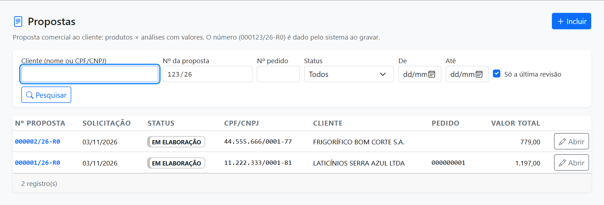
Pesquise pelo cliente (nome ou CPF/CNPJ), pelo número da proposta, pelo número do pedido, pelo status ou pelo período. A opção Só a última revisão esconde as versões antigas das propostas revisadas.
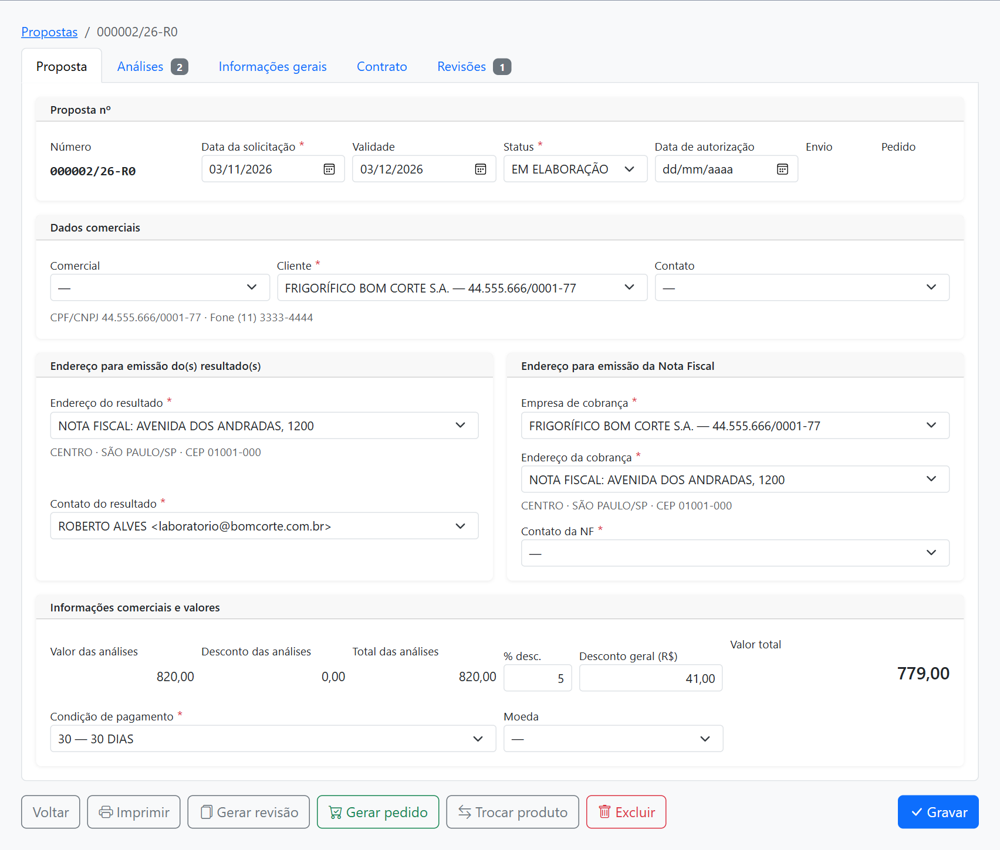
Valor das análises, descontos e valor total são somados pelo sistema a cada mudança. Você só informa a quantidade, o valor unitário (que já vem do cadastro do parâmetro) e os descontos.
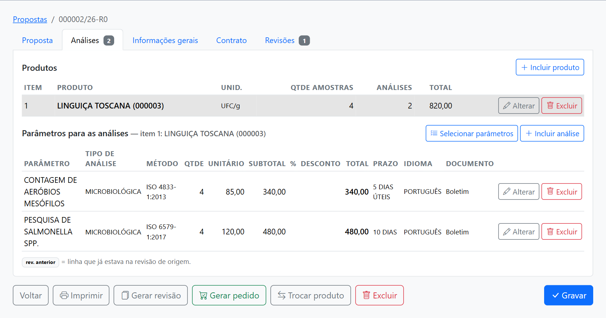
O prazo escolhido define a data prevista de cada teste quando a amostra chega. Se o prazo estiver marcado como "Dias úteis" no cadastro de prazos, o sistema conta só de segunda a sexta (por exemplo, sexta-feira + 5 dias úteis = sexta-feira seguinte); a data prevista nunca cai num sábado ou domingo. Caso contrário, conta dias corridos. Feriados não são descontados.
| Botão | Para que serve |
|---|---|
| Imprimir | Gera o PDF da proposta (com a Autorização de Serviço) para enviar ao cliente. |
| Gerar pedido | Quando o cliente aprova: cria o pedido de venda (capítulo 6). |
| Gerar revisão | Cria uma nova versão (R1, R2…) para alterar uma proposta que já não pode ser mudada diretamente. Pede o motivo. |
| Trocar produto | Troca o produto de um item, mantendo as análises. |
| Excluir | Só para propostas sem amostra e sem pedido. |
Quando a proposta já tem pedido de venda, amostras recebidas ou foi enviada ao cliente, ela aparece com uma faixa amarela e os campos ficam cinza. Para mudar algo, use Gerar revisão: a versão atual fica guardada como histórico e a nova versão pode ser alterada.
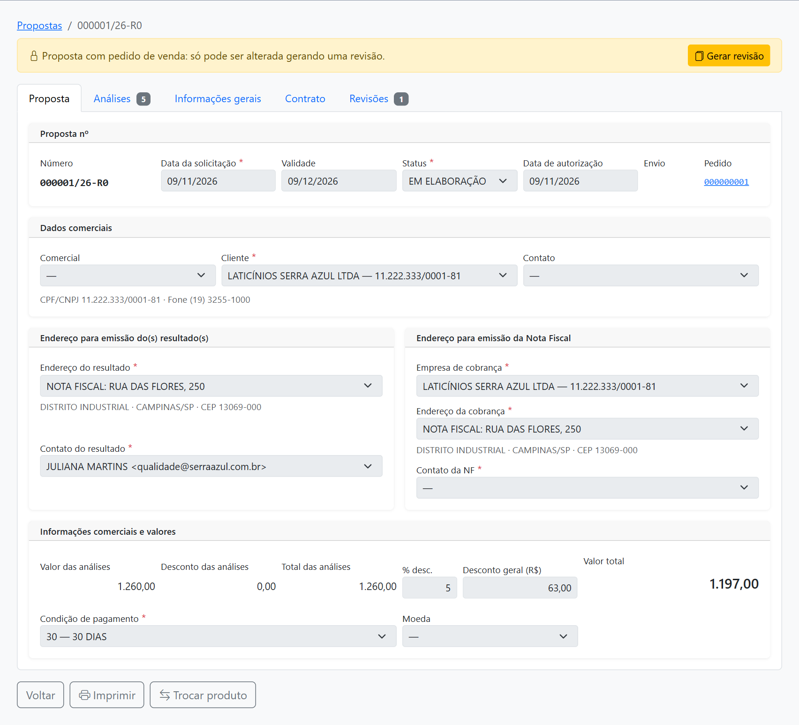
— O pedido registra que o cliente autorizou o serviço da proposta. Ele mostra o que foi contratado e o que já foi recebido, e acompanha as amostras até a emissão dos boletins.
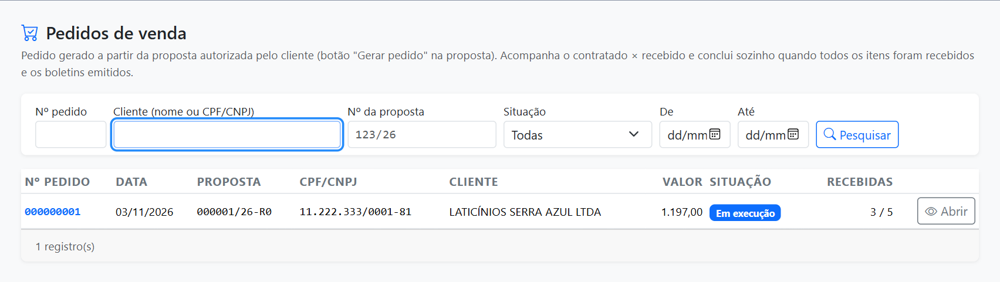
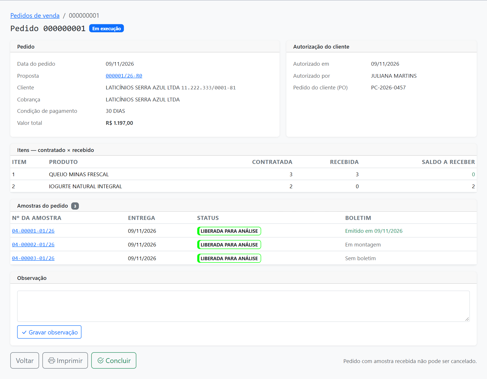
| Botão | Para que serve |
|---|---|
| Concluir | Encerra o pedido à mão, mesmo com item faltando (por exemplo, o cliente desistiu de enviar uma amostra). |
| Reabrir | Volta um pedido concluído para "em execução". Pede o motivo. |
| Cancelar | Cancela o pedido. Só é possível se nenhuma amostra foi recebida. |
| Imprimir | PDF do pedido. |
| Gravar observação | Grava um texto livre no pedido. |
Se a proposta for revisada depois do pedido, abra o pedido e use Atualizar para a revisão vigente para que ele passe a seguir a nova versão (valor, cobrança, condição de pagamento e itens). Uma revisão de boletim reabre o pedido concluído; ele volta a concluir sozinho quando o boletim revisado for emitido.
— Registro da amostra física que chegou ao laboratório. Toda amostra está ligada a um item (produto) de uma proposta.
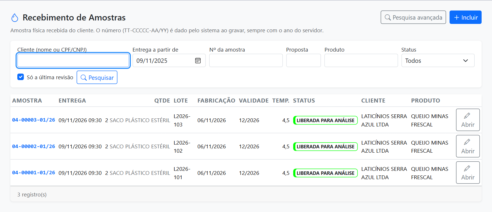
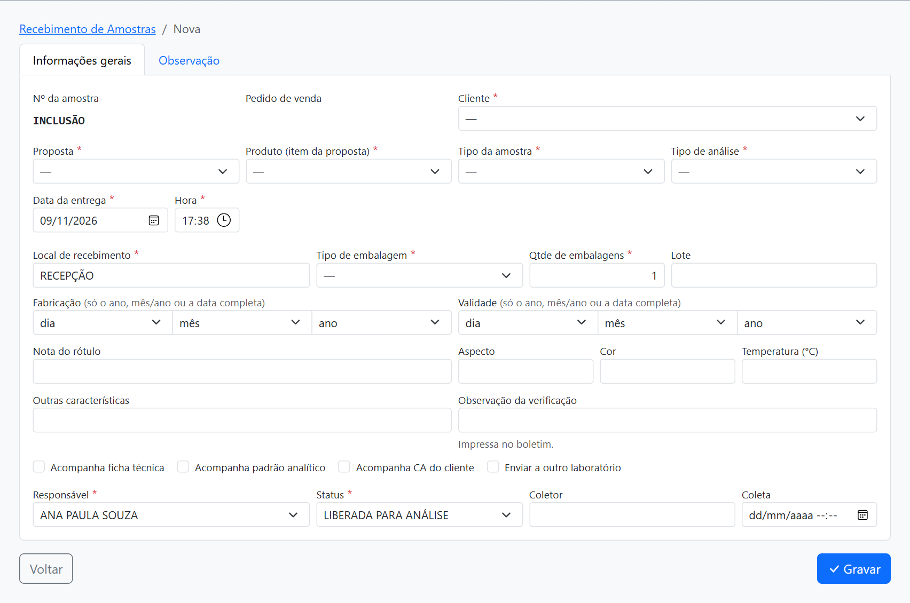
Quando a embalagem traz só o ano, ou só o mês e o ano, preencha apenas o que existe e deixe o resto como "dia"/"mês". O sistema guarda e imprime exatamente o que foi informado (por exemplo, "12/2026").
Se a data de entrega for mais antiga que o limite configurado (normalmente 7 dias), o sistema pede uma confirmação — isso evita erros como digitar o ano errado. Gravar com data antiga também exige uma permissão especial no perfil.
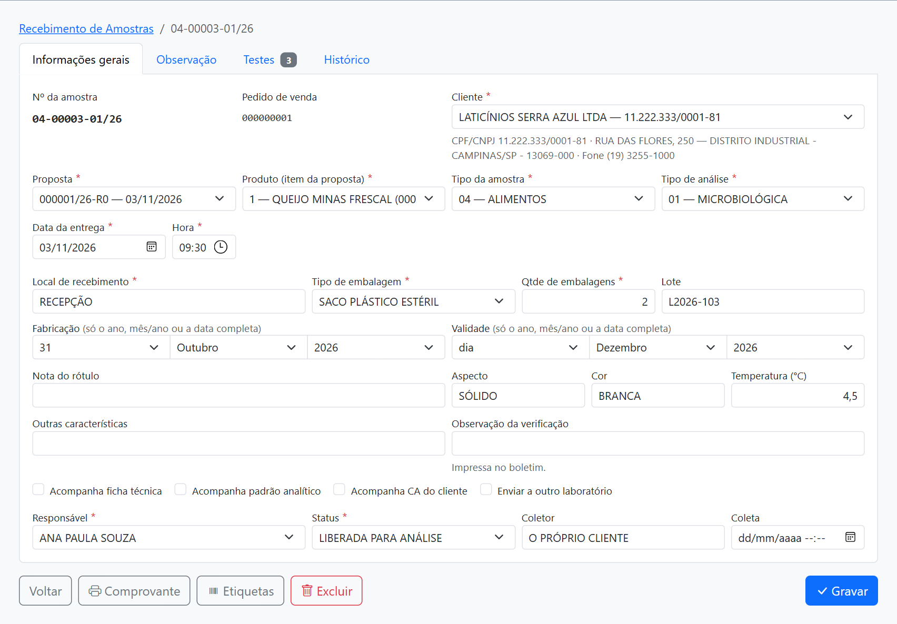
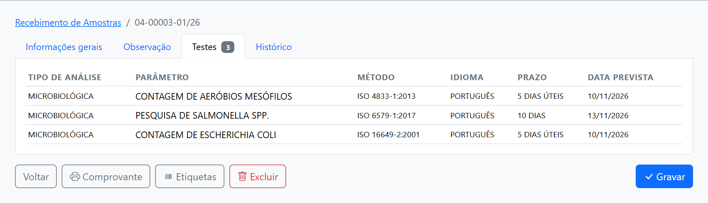
| Botão | Para que serve |
|---|---|
| Comprovante | Abre o comprovante de recebimento para imprimir e entregar a quem trouxe a amostra. |
| Etiquetas | Vai direto para a impressão das etiquetas desta amostra. |
| Excluir | Só para amostra sem resultado. |
| Criar revisão | Para alterar uma amostra que já tem boletim emitido (capítulo 13). |
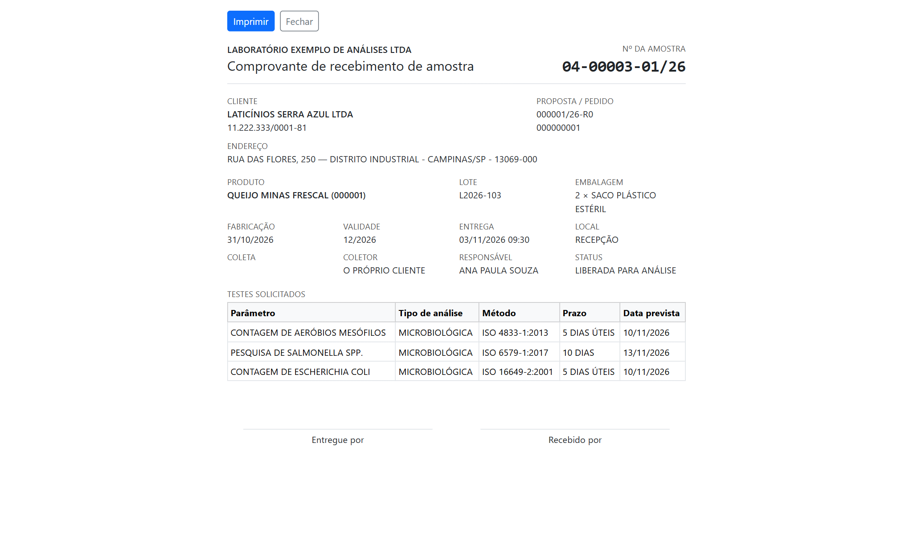
Depois que o boletim da amostra foi emitido, só o status da amostra pode ser alterado. Para corrigir qualquer outro dado, crie uma revisão.
O botão Pesquisa avançada abre uma janela com todos os filtros de amostra (cliente, produto, número, proposta, lote, período de entrega, status). A mesma janela aparece em outras telas para escolher uma amostra: dê duplo clique na linha ou use Selecionar.
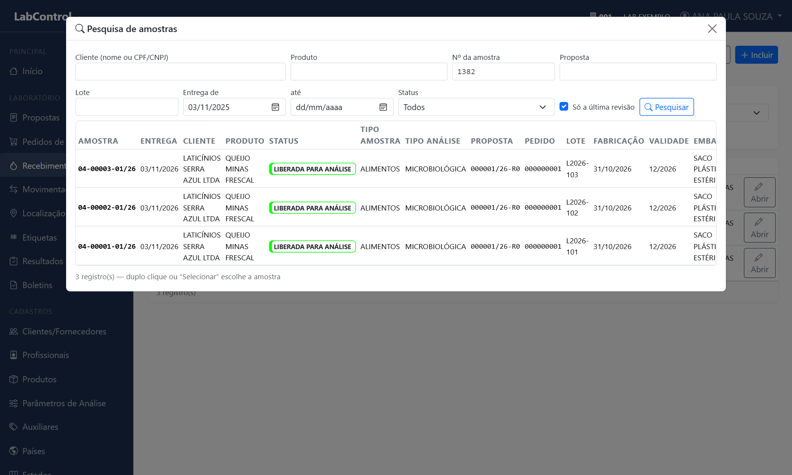
— Imprime as etiquetas de identificação das amostras (80 × 50 mm, com código de barras do número da amostra) direto na impressora térmica do laboratório.
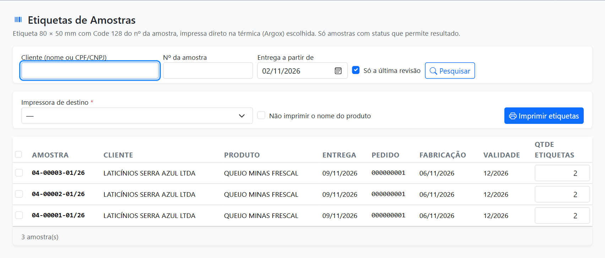
Na tela da amostra, o botão Etiquetas abre esta tela já com a amostra selecionada. Só aparecem amostras com status que permite resultado.
— Controla quantas embalagens da amostra existem no laboratório. A entrada é feita sozinha no recebimento; aqui você registra as saídas (consumo na análise, envio a outro laboratório, devolução ao cliente) e, se for o caso, uma entrada complementar.
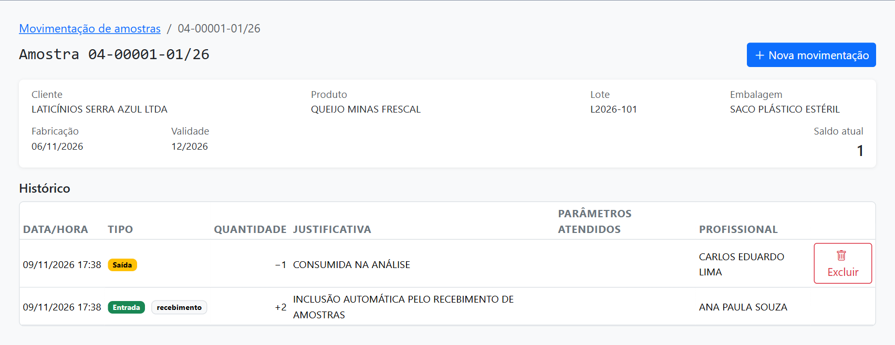
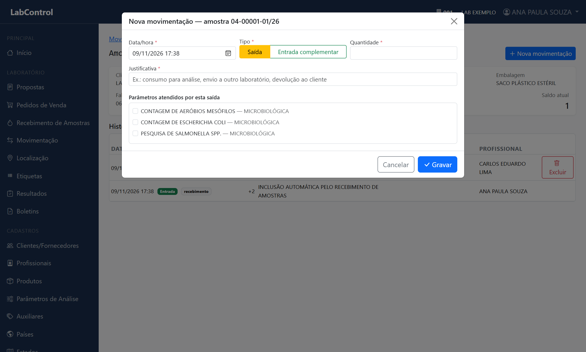
O sistema não aceita uma saída maior que o saldo, nem a exclusão de uma entrada que deixaria o saldo negativo. A entrada automática do recebimento não pode ser excluída.
— Registra onde a amostra (contraprova) está guardada e quando foi descartada.
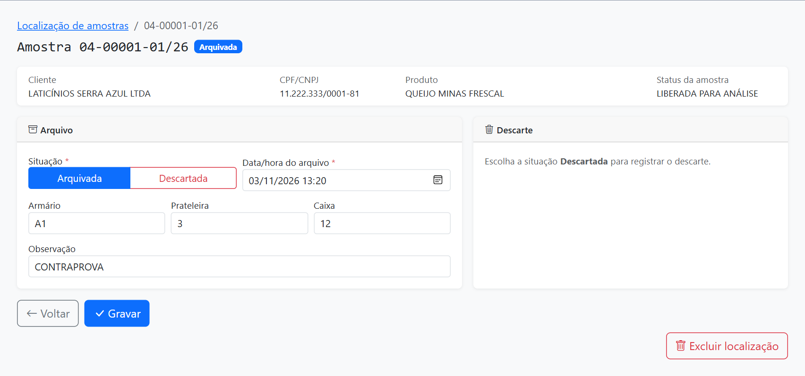
Na lista, é possível marcar várias amostras e arquivá-las de uma vez no mesmo local.
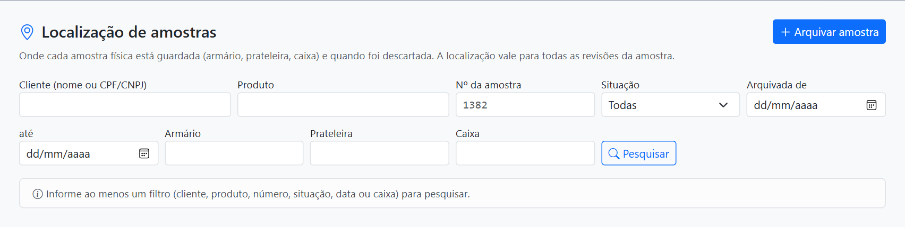
Abra a amostra arquivada, mude a Situação para Descartada, informe a data do descarte e o profissional responsável e grave.
— Lançamento dos resultados das análises. Cada amostra tem um resultado, com uma linha por teste (parâmetro).
A aba Consulta lista os resultados já lançados (um por amostra e revisão), com o número de parâmetros. Use Abrir para ver ou continuar o lançamento.
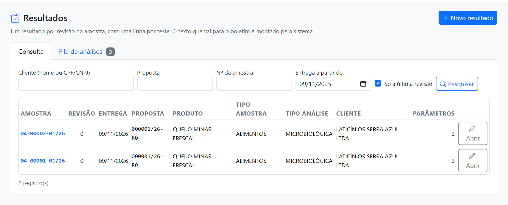
A aba Fila de análises mostra todos os testes que ainda não têm resultado, ordenados pela data prevista. Os testes com prazo vencido aparecem em vermelho. O botão Lançar abre o resultado da amostra.
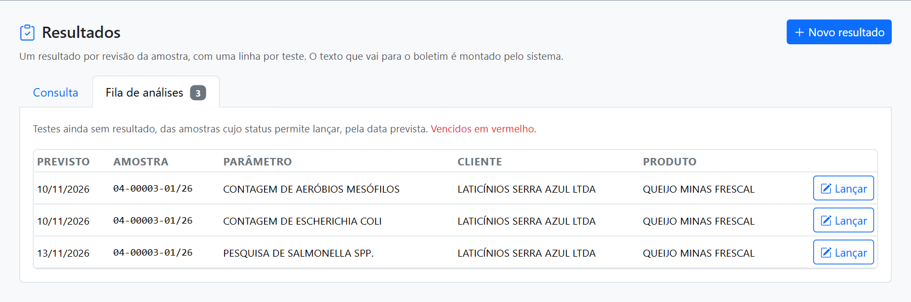
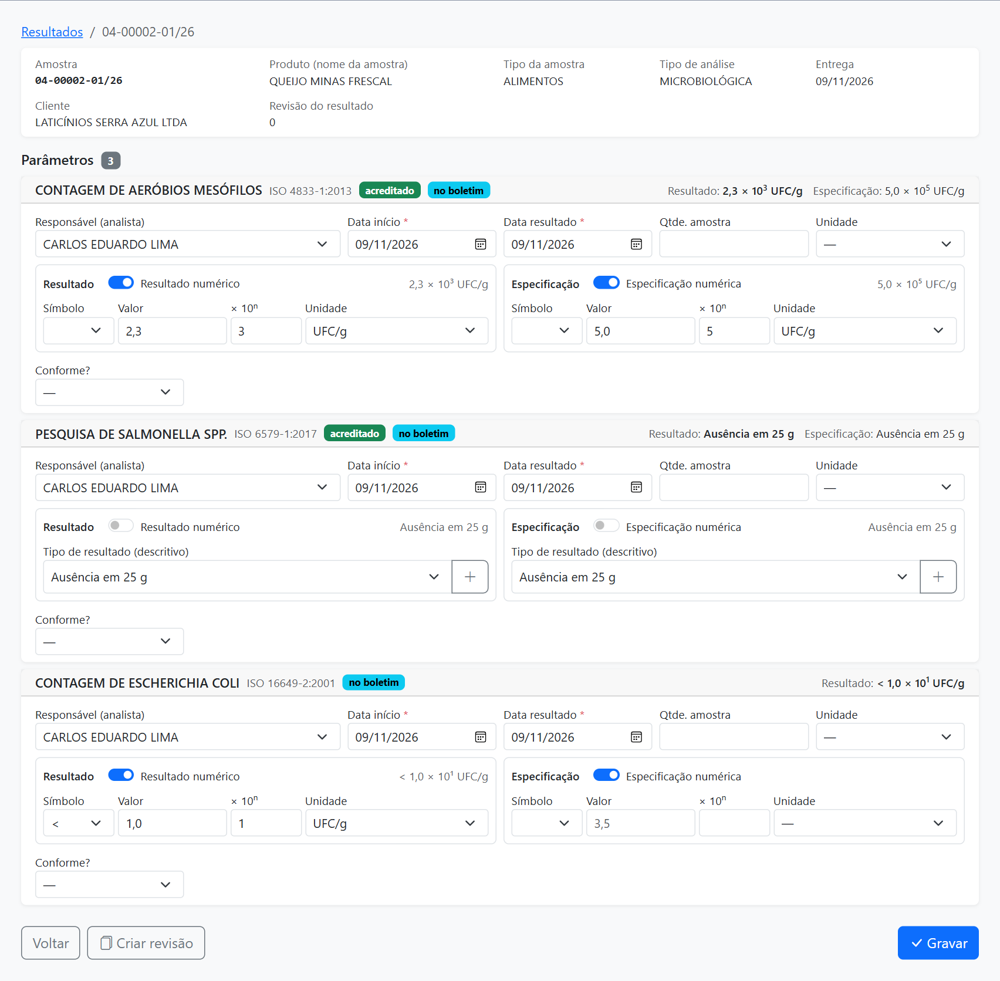
| Tipo | Como preencher | Como sai no boletim |
|---|---|---|
| Numérico (chave ligada) | Símbolo (<, >, ≤…), se houver; Valor (ex.: 2,3); × 10ⁿ — o expoente, se houver (ex.: 3); Unidade (ex.: UFC/g). | 2,3 × 10³ UFC/g |
| Descritivo (chave desligada) | Escolha o tipo de resultado (ex.: "Ausência em 25 g"). Use o + para cadastrar um texto novo. | Ausência em 25 g |
No alto de cada parâmetro aparece a prévia exatamente como sairá no boletim. As etiquetas acreditado e no boletim indicam se o parâmetro é acreditado e se já está em um boletim.
Se o boletim da amostra já foi emitido, o resultado não pode mais ser alterado. Use Criar revisão (capítulo 13): o sistema cria a revisão do resultado e, se você quiser, também a do boletim.
— O boletim (laudo) com os resultados para o cliente. Ele é montado a partir do resultado da amostra, conferido e então emitido. Depois de emitido, fica congelado: o PDF é guardado no servidor e não muda mais.
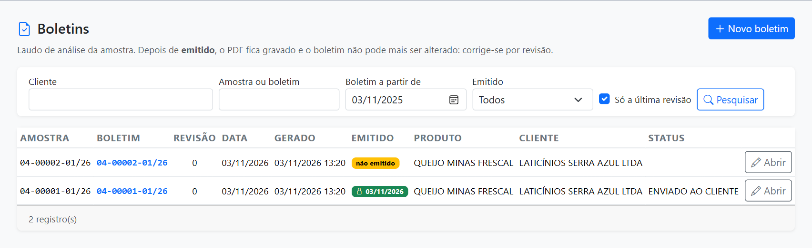
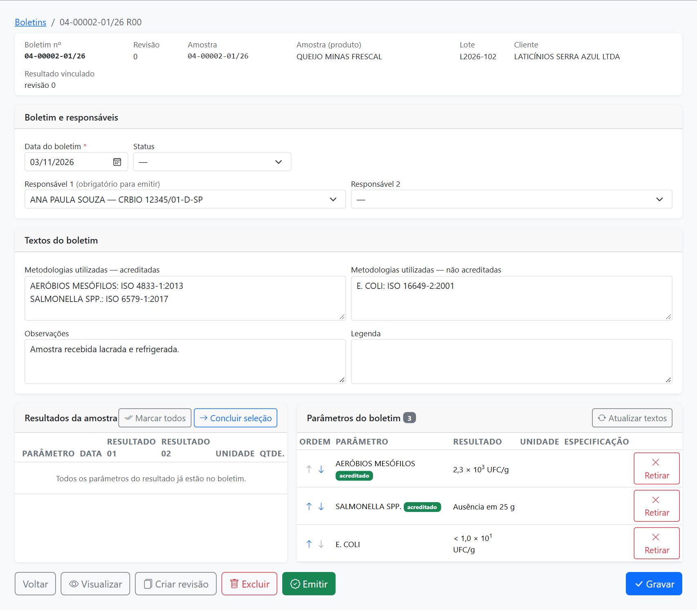
Ao emitir, o sistema gera o PDF oficial (com as assinaturas dos responsáveis e o selo da acreditação nas páginas dos parâmetros acreditados), guarda o arquivo no servidor e congela o boletim. A partir daí não é possível alterar nem excluir; só o status pode mudar. Para corrigir, crie uma revisão.
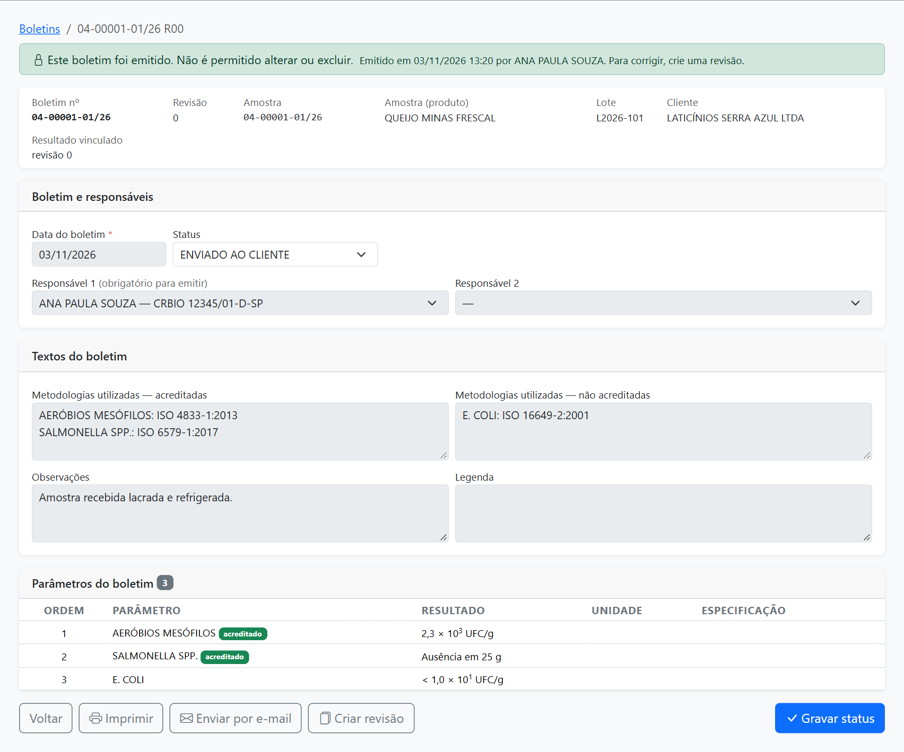
No boletim emitido, Imprimir abre o PDF guardado na emissão. A 2ª via é idêntica à 1ª — mesmo conteúdo, mesmas assinaturas, mesmo nome de arquivo — e pode ser entregue ao cliente ou aos órgãos competentes se o papel original se perder ou estragar. Os boletins vindos do sistema antigo também reimprimem iguais, montados a partir dos dados gravados.
Antes de abrir o PDF, o sistema confere se o arquivo é exatamente o que foi emitido. Se o arquivo tiver sido alterado ou apagado no servidor, aparece um ALERTA DE INTEGRIDADE e o PDF não é entregue. Avise o administrador.
No boletim emitido, Enviar por e-mail abre o envio já com o contato do resultado definido na proposta, o assunto e o texto padrão (configurados nos Parâmetros da Empresa) e o PDF emitido em anexo. Confira os destinatários e envie. O envio fica registrado no histórico e na auditoria.
Documentos que já foram entregues ao cliente não são apagados nem alterados por cima: o sistema cria uma revisão (uma nova versão) e guarda a anterior como histórico, só para consulta. Isso vale para proposta, amostra, resultado e boletim.
| Documento | Quando precisa de revisão | Como aparece |
|---|---|---|
| Proposta | Já tem pedido, amostra ou foi enviada ao cliente. | 000123/26-R1 |
| Amostra | Já tem boletim emitido (exceto troca de status). | 04-00123-01/26 R01 |
| Resultado | Está em um boletim emitido. | Revisão 1, 2… |
| Boletim | Já foi emitido. | 04-00123-01/26 R01 |
Enquanto a revisão do resultado ou do boletim ainda não foi emitida, ela pode ser desfeita (botão Desfazer última revisão): a revisão é apagada e a anterior volta a valer. É preciso ter essa permissão no perfil.
As listas mostram só a versão atual quando a opção Só a última revisão está marcada. Desmarque para ver também as versões antigas.
— Cadastro de clientes, fornecedores, vendedores (comercial) e transportadores, pessoa física ou jurídica. O mesmo cadastro pode ter mais de um tipo (por exemplo, cliente e fornecedor).
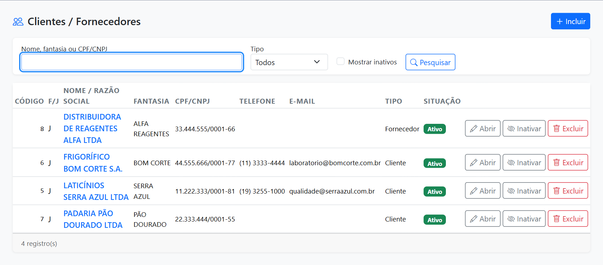
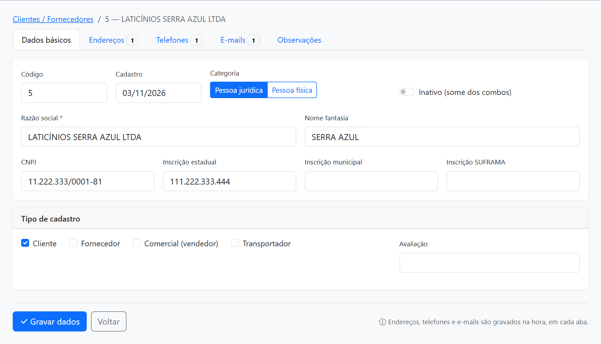
Cada aba tem a sua lista e o botão para incluir. Endereços, telefones e e-mails são gravados na hora, dentro da própria aba — não é preciso clicar em "Gravar dados" depois.
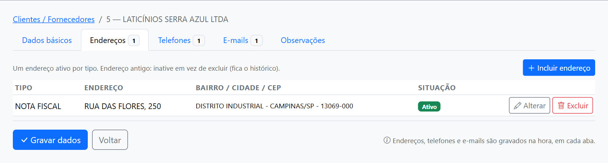
Use Inativo: ele some das listas de escolha (proposta, recebimento), mas o histórico continua completo.
— As pessoas do laboratório: analistas, responsáveis técnicos e quem recebe amostras. O profissional aparece como responsável na amostra, analista no resultado e signatário no boletim.
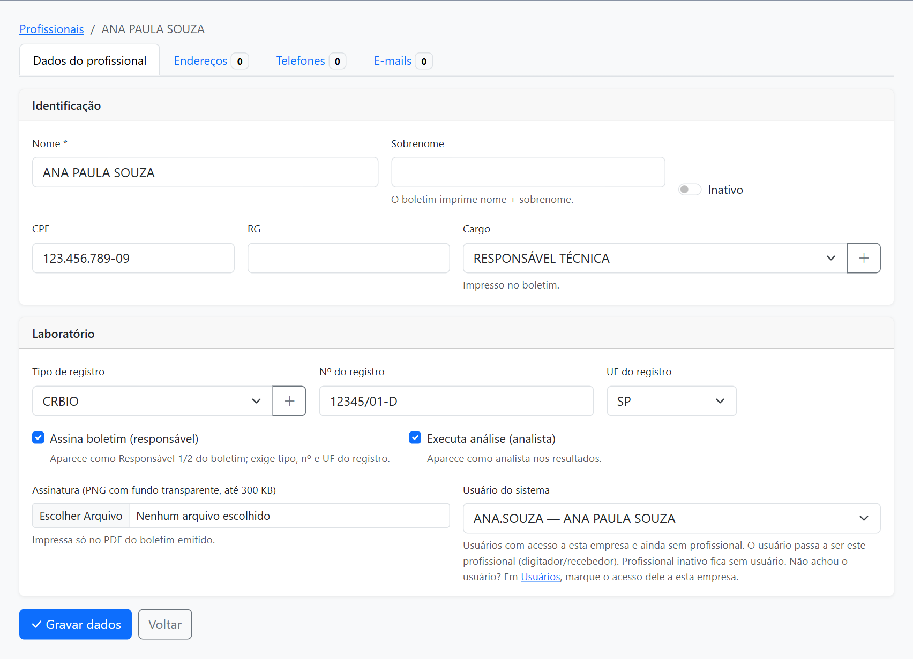
Para gravar propostas e amostras, o seu usuário precisa estar ligado a um profissional (isso é feito na tela de Usuários). Se aparecer uma mensagem pedindo o vínculo, fale com o administrador.
— Os produtos que os clientes enviam para análise (ex.: queijo minas frescal, água mineral).
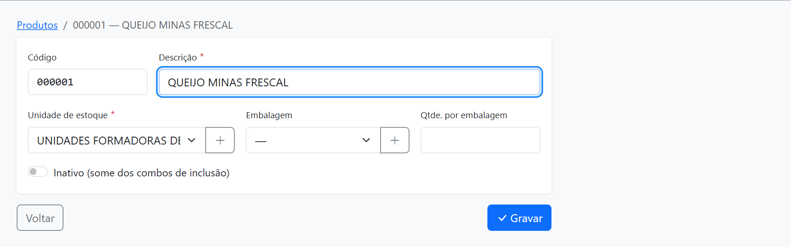
— As análises que o laboratório faz (ex.: Contagem de aeróbios mesófilos, Pesquisa de Salmonella spp.).
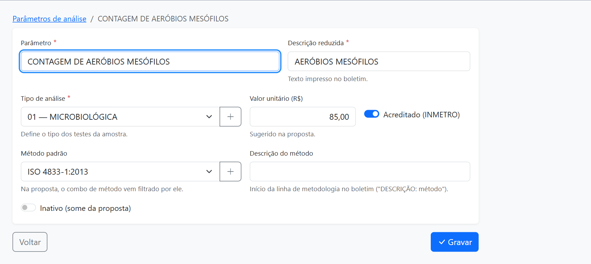
| Campo | Uso |
|---|---|
| Descrição | Nome completo do parâmetro. |
| Descrição reduzida | Nome curto, que sai no boletim. Obrigatório. |
| Tipo de análise | Microbiológica, físico-química… |
| Método padrão | A norma usada (ex.: ISO 4833-1:2013). Sugerido na proposta e usado nas metodologias do boletim. |
| Valor (R$) | Preço unitário sugerido na proposta. |
| Acreditado | Marque se o parâmetro é acreditado. No boletim ele recebe o selo da acreditação. |
Na lista, filtre por tipo de análise ou só os acreditados.
— As listas de apoio usadas nas outras telas. Clique em um quadro para abrir a lista daquele cadastro.
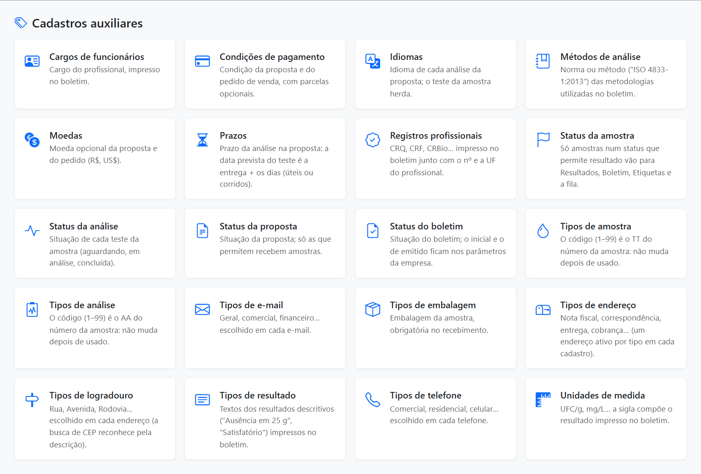
Todos funcionam do mesmo jeito: lista com pesquisa, + Incluir, Abrir para alterar, e Inativar para tirar das listas de escolha sem perder o histórico.
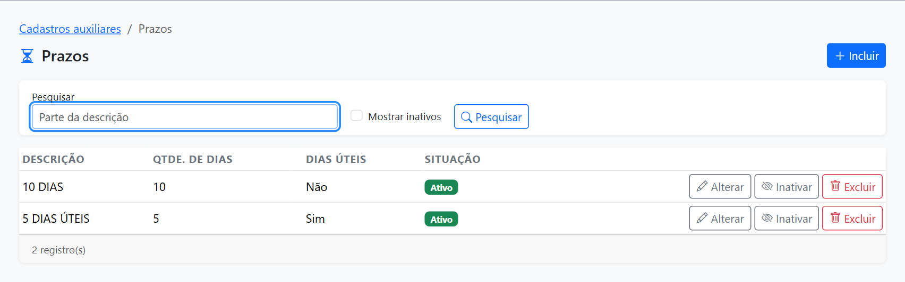
| Cadastro | Cuidado |
|---|---|
| Tipos de amostra e Tipos de análise | O código (1 a 99) faz parte do número da amostra. Depois de usado, não pode mudar. |
| Status da amostra | Só amostras num status com "Permite resultado" aparecem em Resultados, Boletins, Etiquetas e na fila. Deve existir pelo menos um status assim. |
| Status da proposta | Só propostas num status que permite amostra aparecem no recebimento. |
| Prazos | Quantidade de dias e a opção Dias úteis: marcada, conta só de segunda a sexta; desmarcada, dias corridos. |
| Condições de pagamento | O botão Parcelas define as parcelas; a soma precisa dar 100%. |
| Tipos de resultado | Os textos dos resultados descritivos (ex.: "Ausência em 25 g"), impressos no boletim. |
| Unidades de medida | A sigla (ex.: UFC/g) é a que sai no resultado. |
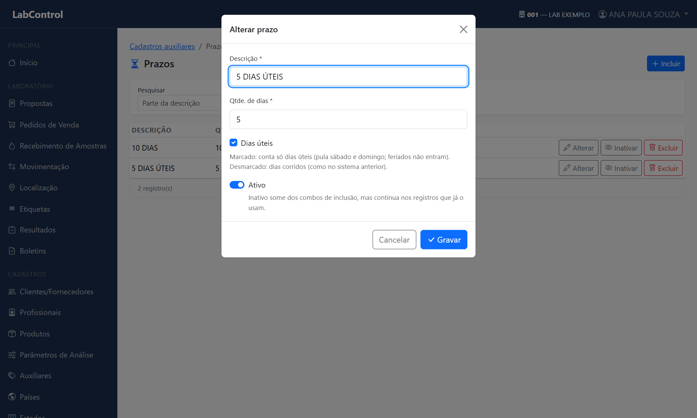
— Já vêm com todos os 5.571 municípios do IBGE, usados na busca de endereço pelo CEP. Todos podem consultar; só o administrador geral pode incluir ou alterar. Normalmente não é preciso mexer aqui.
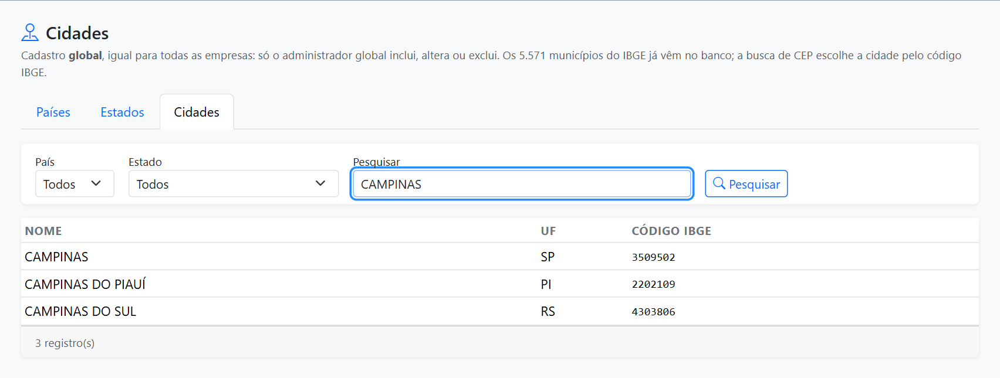
— Todos os relatórios funcionam do mesmo jeito:
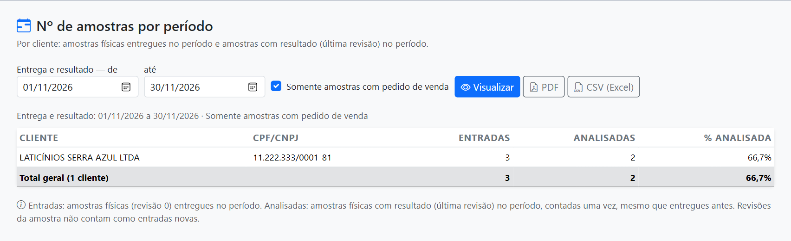
| Relatório | O que mostra |
|---|---|
| Faturamento | Pedidos de venda autorizados no período (não cancelados), um por pedido, com os valores da revisão atual da proposta. Filtros: cliente, empresa de cobrança, situação do pedido. |
| Amostras por período | Por cliente: amostras entregues e amostras analisadas no período, e o percentual analisado. |
| Amostras por cliente | Como o anterior, mas separado por cliente e produto; pode ser filtrado por um cliente. |
| Parâmetros analisados | Quantas vezes cada parâmetro foi analisado (com resultado) no período. |
| Tempo de análise | Quantos dias cada análise levou, da data de início à data do resultado (contando os dois dias); pode ser filtrado por um parâmetro. |
| Produção por período | As análises concluídas no período, pela data do resultado: quantidade analisada, parâmetro e produto. |
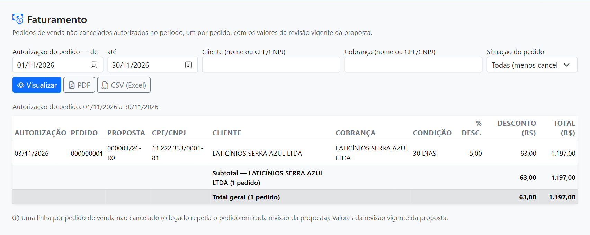
Nos relatórios de amostras, essa opção vem marcada. Desmarque para incluir também as amostras recebidas sem pedido.
— Os dados da sua empresa (o laboratório), usados no cabeçalho e no rodapé dos boletins, propostas e pedidos.
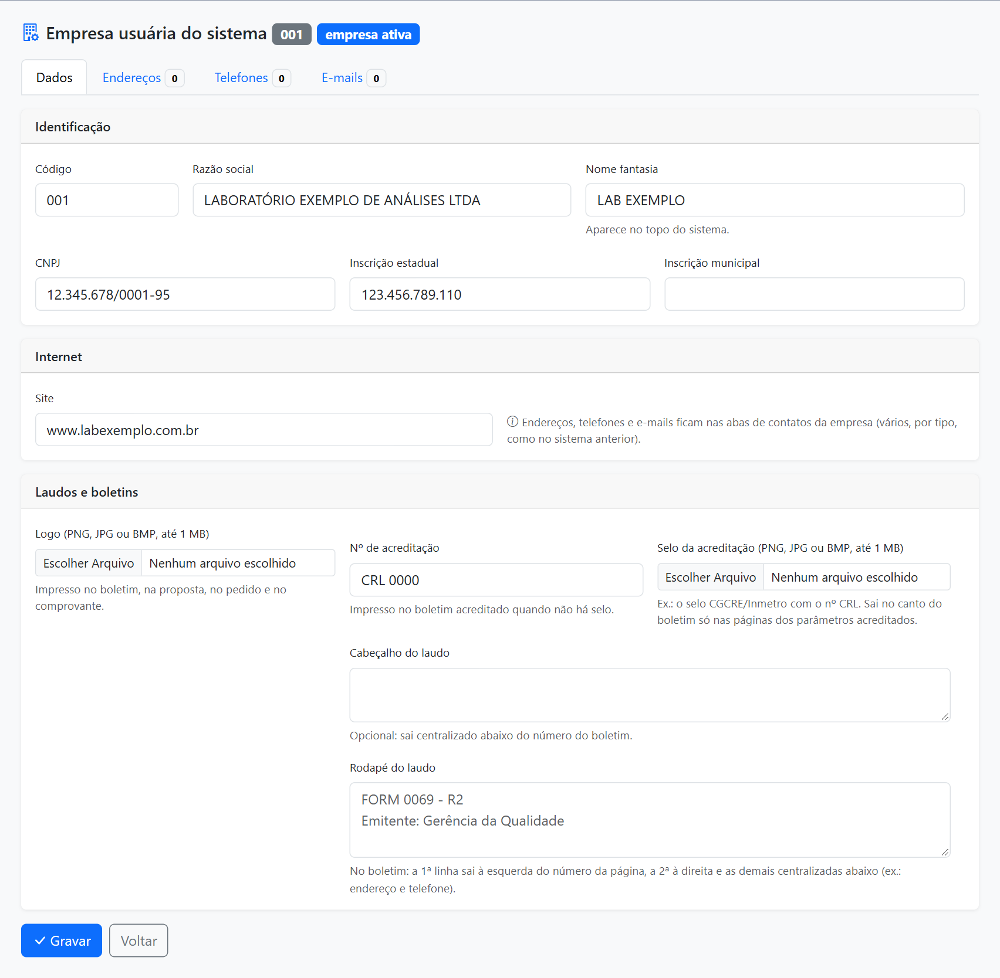
O administrador geral vê a lista de todas as empresas e o botão + Incluir. Ao criar uma empresa, o sistema já prepara os status, os perfis sugeridos e a numeração dela, e pode copiar os cadastros de outra empresa.
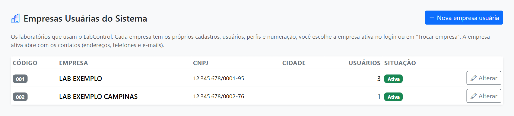
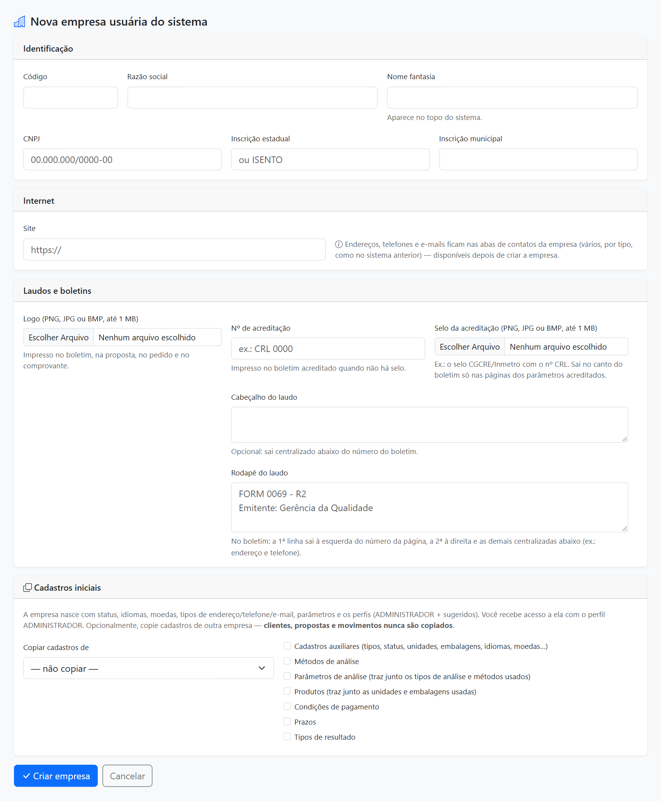
— As regras de funcionamento da empresa ativa.
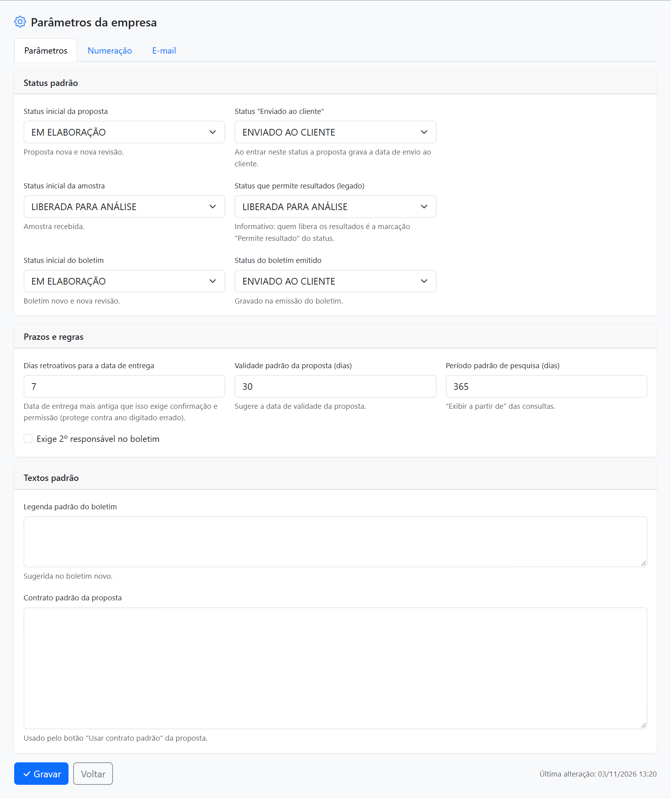
| Grupo | O que define |
|---|---|
| Status padrão | O status com que nascem a proposta, a amostra e o boletim; o status "Enviado ao cliente" da proposta; o status do boletim emitido. |
| Prazos e regras | Dias retroativos para a data de entrega (acima disso, pede confirmação); validade padrão da proposta; período padrão de pesquisa (de quantos dias para trás as listas mostram); se o boletim exige 2º responsável. |
| Textos padrão | A legenda sugerida no boletim e o contrato padrão da proposta. |
Mostra o último número usado de cada documento (amostra, proposta, pedido, produto) por ano. Só o administrador geral pode ajustar, e nunca para menos do que o maior número já usado. O motivo do ajuste fica registrado.
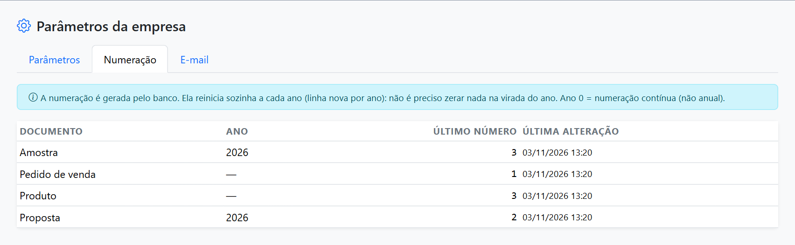
Configuração do envio de boletins por e-mail: servidor, porta, segurança, usuário e senha da conta, remetente, cópia oculta e os modelos de assunto e texto (com marcadores como o número do boletim e o nome do cliente). Use Enviar e-mail de teste para conferir a configuração.
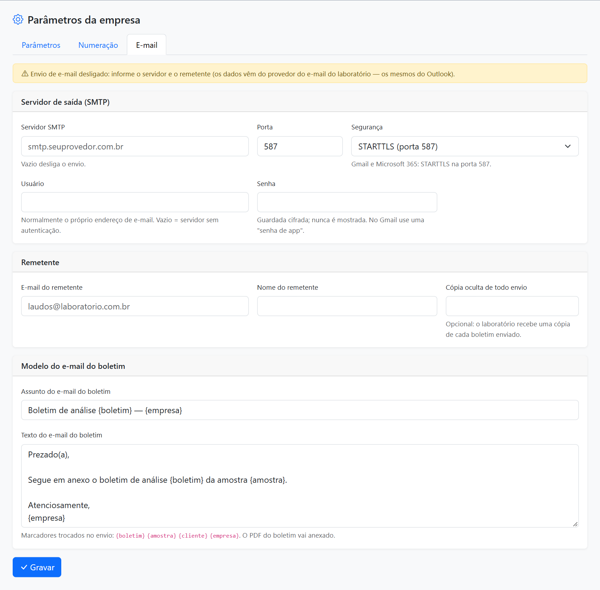
— Quem pode entrar no sistema.
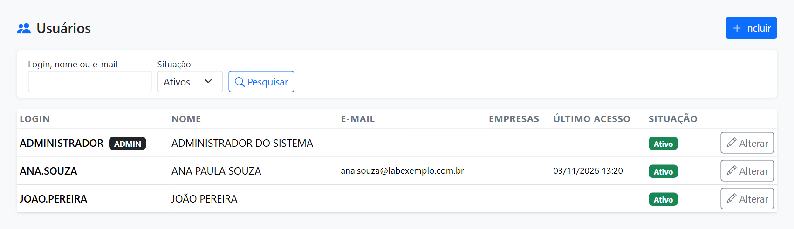
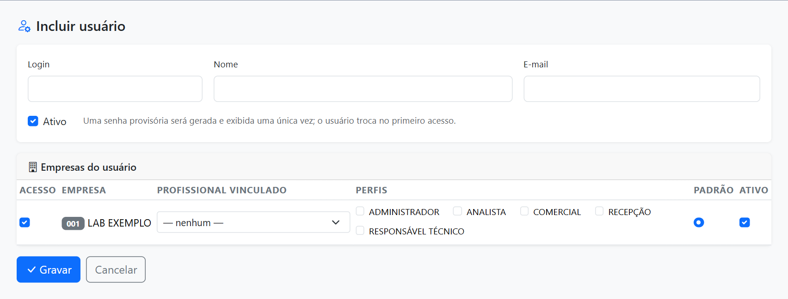
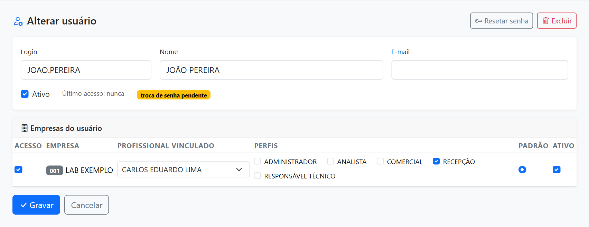
| Botão | Para que serve |
|---|---|
| Resetar senha | Gera uma nova senha provisória (para quem esqueceu a senha). |
| Desbloquear | Libera o usuário bloqueado por tentativas erradas. |
| Ativo | Desmarcado, o usuário não entra mais, mas o histórico dele continua. |
| Excluir | Só para quem nunca gravou nada. |
— Um perfil é um conjunto de permissões. Em vez de configurar cada usuário, você monta perfis (Recepção, Analista, Responsável Técnico, Comercial…) e dá a cada usuário os perfis que ele precisa.
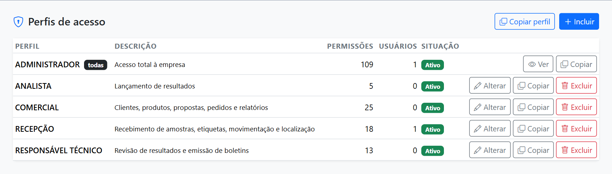
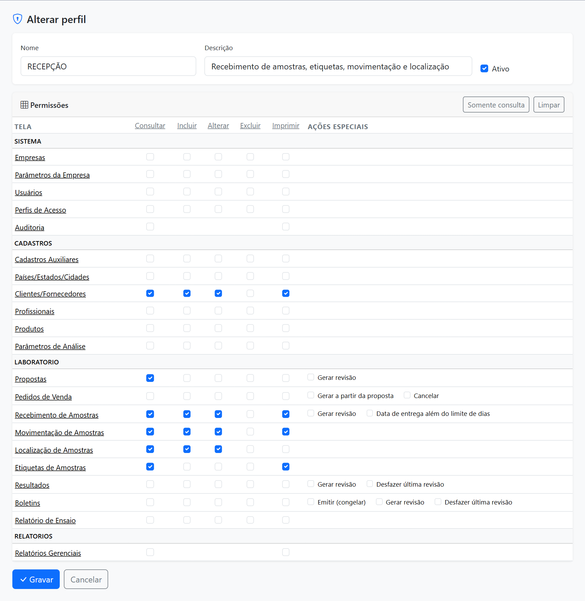
Toda empresa nova já vem com os perfis ADMINISTRADOR, RECEPÇÃO, ANALISTA, RESPONSÁVEL TÉCNICO e COMERCIAL. Ajuste-os ao seu laboratório. O perfil ADMINISTRADOR tem tudo e não pode ser alterado. Use Copiar para levar um perfil para outra empresa.
— O registro de tudo o que foi feito no sistema: quem, quando, o quê e de onde. Inclui inclusões, alterações, exclusões, revisões, emissões de boletim, envios de e-mail e entradas no sistema.
Clique em um evento para ver o detalhe: os campos que mudaram, com o valor de antes e o de depois.
O botão CSV exporta a lista para uma planilha.
— Só para o administrador geral, normalmente feita uma única vez, na implantação. Traz todos os dados do sistema antigo: empresa, cadastros, propostas, pedidos, amostras (com os mesmos números), estoque, arquivo, resultados e boletins (que chegam emitidos e reimprimem iguais). O sistema antigo só é lido; nada é alterado nele.
A migração grava num banco vazio ou recém-instalado. Num banco que já tem cadastros ou movimentos ela é recusada, para não misturar dados. Faça um backup antes.
Peça ao administrador: em Usuários, ele usa Resetar senha e passa a você uma senha provisória. No primeiro acesso, você cria a nova senha.
Foram 5 tentativas erradas. Espere 15 minutos ou peça ao administrador para desbloquear.
O seu perfil não tem a permissão "Consultar" dessa tela. Fale com o administrador.
As listas mostram de início só o período recente. Mude a data "a partir de" para mais longe e pesquise de novo. Confira também a opção "Só a última revisão".
Confira se ela é do cliente escolhido e se o status dela permite receber amostras (cadastro auxiliar Status da proposta).
O status da amostra precisa ser um status que permite resultado (ex.: "Liberada para análise").
Abra o boletim e use Criar revisão (capítulo 13). Se a correção é no resultado, crie a revisão pelo resultado e marque para revisar também o boletim.
Abra o boletim emitido e clique em Imprimir ou Enviar por e-mail. A 2ª via é idêntica à original.
Ela é a data de entrega mais os dias do prazo da análise na proposta. Se o prazo for de dias úteis, sábados e domingos não contam; feriados contam.
O servidor foi reiniciado ou você trocou de empresa. Entre normalmente.
Sim, pelo navegador do celular ou do tablet. As telas se ajustam, mas o uso é mais confortável no computador.